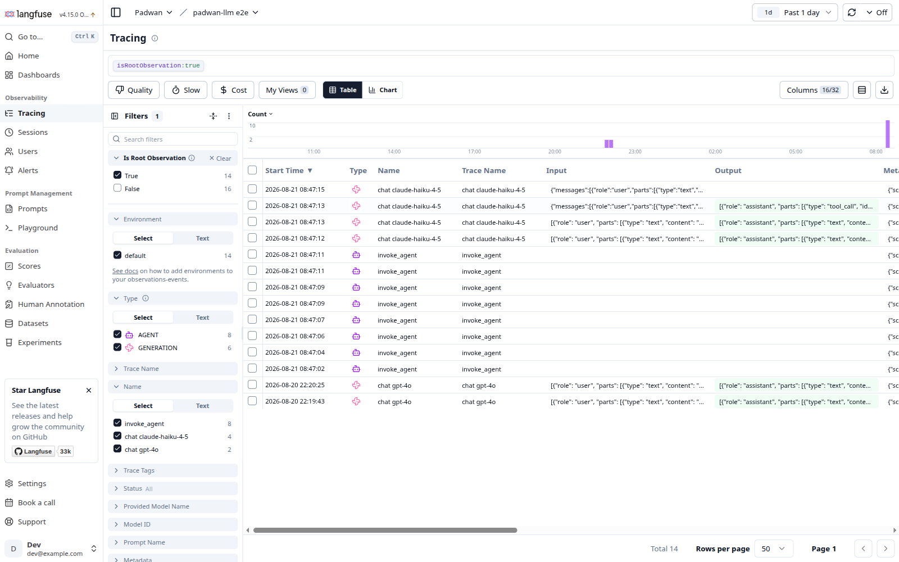
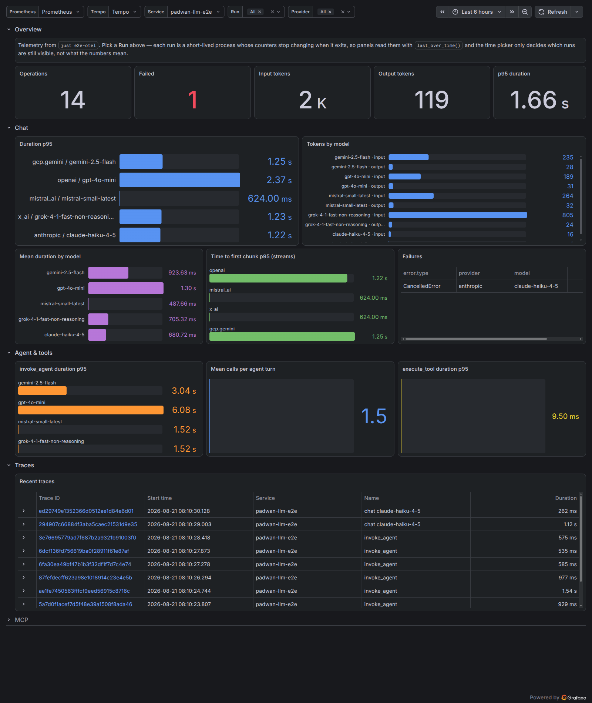

Observability (OpenTelemetry)
Padwan AI ships opt-in OpenTelemetry instrumentation following the GenAI semantic conventions. It only depends on opentelemetry-api, behind the otel extra:
Quick start
instrument() wraps every provider client (OpenAI, Gemini, Mistral, Grok, Anthropic, Voyage): chat completions and streams, batch operations, embeddings, realtime sessions, agent turns and tool execution, and MCP tool calls. Calling it twice raises RuntimeError; call otel.uninstrument() first to restore the original methods (check with otel.is_instrumented()).
OpenAIClient.complete() and OpenAIClient.stream() also create chat spans when called directly. Calls through complete_chat() or stream_chat() share the existing chat span. With content capture enabled, raw responses preserve each choice separately, including function and custom tool calls.
Content capture is disabled by default. Enabling it records prompts, responses, tool definitions, and tool arguments or results, which may contain sensitive data.
otel.instrument(
tracer_provider=..., # spans
meter_provider=..., # metrics
logger_provider=..., # exception events
capture_content=True, # sensitive content capture
)
Langfuse
The optional Langfuse adapter configures Padwan instrumentation and the Langfuse trace exporter together:
pip install "padwan-ai[langfuse]"
export LANGFUSE_PUBLIC_KEY="<PUBLIC_KEY>"
export LANGFUSE_SECRET_KEY="<SECRET_KEY>"
export LANGFUSE_BASE_URL="https://cloud.langfuse.com"
import asyncio
from padwan_ai import LLMClient
from padwan_ai.langfuse import instrument
async def main() -> None:
async with LLMClient(model="gpt-4o-mini") as client:
await client.complete_chat([{"role": "user", "content": "Hello!"}])
with instrument() as telemetry:
asyncio.run(main())
The returned LangfuseIntegration exposes the configured Langfuse client as telemetry.client. Its context manager restores the original Padwan methods, then shuts down (and flushes) the Langfuse client. Call flush() only to send pending traces without shutting down; shutdown() is idempotent.

The adapter enriches the copy of each span sent to Langfuse while leaving its standard OpenTelemetry attributes unchanged for other exporters:
| Padwan telemetry | Langfuse mapping |
|---|---|
chat |
generation observation |
embeddings |
embedding observation |
invoke_agent |
agent observation |
execute_tool |
tool observation |
| Batch, realtime, and MCP operations | span observation |
gen_ai.input.messages, system instructions, tool definitions, or tool arguments |
observation input |
gen_ai.output.messages or tool result |
observation output |
gen_ai.conversation.id |
session id |
padwan_ai.response.first_chunk_time |
completion start time (time to first token on generations) |
Langfuse reads the standard GenAI model, usage, and cost attributes directly. Inputs and outputs remain absent unless capture_content=True.
Enabling content capture may send prompts, responses, tool definitions, tool arguments, and tool results to Langfuse. These values can contain personal data, secrets, or proprietary context. Use Langfuse's mask_otel_spans hook to redact them; the adapter applies that hook before deriving Langfuse input and output attributes, so deleted source content is not recreated under an alias.
from langfuse.types import MaskOtelSpansParams, MaskOtelSpansResult, OtelSpanPatch
from padwan_ai.langfuse import instrument
def redact_inputs(*, params: MaskOtelSpansParams) -> MaskOtelSpansResult:
return MaskOtelSpansResult(
span_patches={
span_id: OtelSpanPatch(delete_attributes=("gen_ai.input.messages",))
for span_id in params.spans
}
)
telemetry = instrument(capture_content=True, mask_otel_spans=redact_inputs)
instrument() accepts Langfuse credentials and routing (public_key, secret_key, base_url), trace metadata (environment, release), delivery controls (sample_rate, timeout, flush_at, flush_interval), debug, an existing tracer_provider, and should_export_span. For tests, span_exporter (e.g. an InMemorySpanExporter) and httpx_client (e.g. httpx.Client(transport=httpx.MockTransport(...))) are handed to the Langfuse client as-is, so a test can assert on every attribute the integration would send without opening a socket. The credential arguments fall back to the standard Langfuse environment variables. A custom span filter is applied after the adapter includes Padwan spans.
To send some traces to a second Langfuse project, build another Langfuse client on the same tracer provider with the two hooks instrument() uses, SpanAdapter (the mapping above, after an optional user mask) and SpanFilter (Padwan spans plus Langfuse's default selection, narrowed by an optional user filter):
from langfuse import Langfuse
from padwan_ai.langfuse import SpanAdapter, SpanFilter, instrument
telemetry = instrument(should_export_span=lambda span: not is_billing(span))
billing = Langfuse(
public_key="pk-billing",
secret_key="sk-billing",
tracer_provider=telemetry.tracer_provider,
mask_otel_spans=SpanAdapter(),
should_export_span=SpanFilter(is_billing),
)
is_billing stands for your own routing rule. The second client flushes at interpreter exit like any Langfuse client; call billing.flush() to send its spans earlier, since closing telemetry flushes only its own client.
The integration exports traces only. Padwan metrics and exception log events still require separately configured OpenTelemetry meter and logger providers. Start the Langfuse integration before using Padwan; if padwan_ai.otel.instrument() is already active, the adapter raises instead of silently attaching to a different provider. See the Langfuse OpenTelemetry integration for backend configuration and troubleshooting.
Chat spans
Each chat call emits one CLIENT span named chat <model> (or chat when no model is set). For streams, the span starts on first iteration and ends when the stream completes, errors, is cancelled, or is abandoned.
| Attribute | Example | Notes |
|---|---|---|
gen_ai.operation.name |
chat |
|
gen_ai.provider.name |
openai, gcp.gemini, mistral_ai, x_ai, anthropic, voyage, elevenlabs, gradium |
semconv well-known values (voyage, elevenlabs and gradium have none); ElevenLabs and Gradium report only their realtime clients; OpenAI-compatible endpoints report openai, distinguished by server.address |
gen_ai.request.model |
gpt-4o |
omitted when no model is set |
gen_ai.request.temperature |
0.7 |
only when actually sent on the wire |
gen_ai.request.stream |
true |
streams only |
server.address |
api.openai.com |
|
server.port |
443 |
explicit or inferred from the URL scheme |
gen_ai.usage.input_tokens |
10 |
|
gen_ai.usage.output_tokens |
20 |
|
gen_ai.usage.cache_read.input_tokens |
3 |
when the provider reports cached prompt tokens |
gen_ai.usage.cache_write.input_tokens |
4 |
Anthropic prompt-cache writes |
gen_ai.usage.reasoning.output_tokens |
5 |
when the provider reports thought/reasoning tokens separately¹ |
gen_ai.response.finish_reasons |
["stop"] |
|
gen_ai.response.time_to_first_chunk |
0.4 |
streams only |
padwan_ai.response.first_chunk_time |
2026-09-14T10:00:00.412000Z |
streams only: wall-clock instant of the first chunk, ISO 8601 UTC (custom attribute). OpenAI counts the first raw chunk (text, tool call or reasoning); other providers count the first text chunk |
openai.api.type, openai.request.service_tier, openai.response.service_tier, openai.response.system_fingerprint |
OpenAI vendor extras, including streamed responses | |
padwan_ai.response.tool_names |
["get_weather"] |
tool calls requested by the model (custom attribute) |
padwan_ai.thinking.duration |
1.2 |
seconds between the first and last on_thought chunk of a stream (custom attribute) |
error.type |
LLMError, CancelledError |
on failure, with ERROR status and a recorded exception |
¹ Token accounting follows each provider's usage report: OpenAI-style APIs count reasoning tokens inside output_tokens; Gemini reports thought tokens outside candidatesTokenCount, so they are not part of gen_ai.usage.output_tokens. Anthropic does not report a separate count. Per the Anthropic-specific conventions, gen_ai.usage.input_tokens includes cache read/write tokens (which Anthropic's raw input_tokens excludes).
Content capture (opt-in)
instrument(capture_content=True) additionally records gen_ai.input.messages, gen_ai.output.messages, gen_ai.system_instructions when the provider API separates them, and gen_ai.tool.definitions on chat spans as semconv-shaped JSON strings. It also emits the structured gen_ai.client.inference.operation.details log event and records gen_ai.tool.call.arguments and gen_ai.tool.call.result on tool spans. Image and audio parts are captured as their type only, never their payload.
Agent spans
Each AgentSession.send() / .stream() turn emits an invoke_agent span covering all rounds; the chat and tool spans of the turn nest under it:
| Attribute | Example |
|---|---|
gen_ai.operation.name |
invoke_agent |
gen_ai.conversation.id |
the session_id |
gen_ai.usage.input_tokens / output_tokens |
tokens consumed by the whole turn |
Each dispatched tool emits an execute_tool <name> child span:
| Attribute | Example |
|---|---|
gen_ai.operation.name |
execute_tool |
gen_ai.tool.name |
get_weather |
gen_ai.tool.type |
function |
gen_ai.tool.call.id |
call_1 |
gen_ai.tool.description |
Get the current weather |
Agent invocations also record dedicated duration, inference-call count, and tool-call count metrics. Tool executions record their own duration metric.
Embeddings, batch, realtime, and MCP
- Embeddings: every
fetch_embeddings(OpenAI-compatible clients, Gemini, Voyage) emits anembeddings <model>span (gen_ai.operation.name=embeddings); the model is the one passed to the call, else the client's default. The span carries the semconv embeddings attributes below; input tokens also feedgen_ai.client.token.usage. - Batch: batch operations (
create_batch,get_batch,list_batches,cancel_batch, and the OpenAI/Grok file helpers) emit a span named after the operation. No model attribute is set — batch requests carry their own per-request models. - Realtime: a
realtime <model>span covers the wholeRealtimeClientsession, from connect to close, with connect failures recorded as errors. - MCP: initialization, tool-list refresh, ping, and direct tool calls emit CLIENT spans, named after
mcp.method.name(tool calls usetools/call <name>). An MCP call dispatched through an agent enriches the existingexecute_toolspan instead of creating a duplicate span.
| Attribute | Example | Notes |
|---|---|---|
gen_ai.embeddings.dimension.count |
256 |
length of the returned vectors, so it is set whether or not dimensions= was passed |
gen_ai.request.encoding_formats |
["base64"] |
when extra_params carries encoding_format |
gen_ai.response.model |
text-embedding-3-small |
OpenAI-shaped responses only |
gen_ai.usage.input_tokens |
4 |
OpenAI-shaped responses only (prompt_tokens, else total_tokens); Gemini's batch endpoint reports no usage |
mcp.method.name |
tools/call |
|
mcp.protocol.version |
2025-06-18 |
|
mcp.session.id |
1f5b… |
HTTP transports, once the server assigns one |
network.transport |
pipe, tcp |
pipe for stdio servers |
network.protocol.name |
http |
HTTP transports only |
server.address / server.port |
api.example.com, 443 |
HTTP transports only |
rpc.response.status_code |
-32602 |
on MCP error <code> failures |
error.type |
-32602, tool_error |
tool results flagged isError report tool_error |
Metrics
| Instrument | Type | Unit | Attributes |
|---|---|---|---|
gen_ai.client.operation.duration |
Histogram | s |
request attributes, plus error.type on failure |
gen_ai.client.token.usage |
Histogram | {token} |
request attributes, plus gen_ai.token.type (input / output) |
gen_ai.client.operation.time_to_first_chunk |
Histogram | s |
streams: time from request to first chunk |
gen_ai.client.operation.time_per_output_chunk |
Histogram | s |
streams: one measurement between each pair of chunks |
gen_ai.invoke_agent.duration |
Histogram | s |
agent invocation attributes, plus error.type on failure |
gen_ai.invoke_agent.inference_calls |
Histogram | {inference_call} |
inference calls made during an agent invocation |
gen_ai.invoke_agent.tool_calls |
Histogram | {tool_call} |
tool calls made during an agent invocation |
gen_ai.execute_tool.duration |
Histogram | s |
tool name and type, plus error.type on failure |
mcp.client.operation.duration |
Histogram | s |
mcp.method.name, plus error.type on failure |
mcp.client.session.duration |
Histogram | s |
MCP protocol and transport attributes, plus error.type on failure |
Every instrument advises the bucket boundaries the GenAI semantic conventions recommend — the SDK default ladder starts at 5s and would collapse every GenAI latency into a single bucket, making quantiles meaningless.
Token metrics are recorded only for model calls. invoke_agent reports aggregate usage as span attributes to avoid double counting.
Exception events
Failed GenAI client operations additionally emit a gen_ai.client.operation.exception log event (severity WARN) through the logs API, correlated to the failing span and carrying exception.type, exception.message, exception.stacktrace, and the request attributes.
Semconv coverage
Detailed status per section of the GenAI semantic conventions:
| Convention | Status | Supported | Not supported |
|---|---|---|---|
| Model spans | ✅ | chat / embeddings spans, semconv naming, request + usage attributes (stream, reasoning, cache read/write), finish reasons, time_to_first_chunk, error recording |
gen_ai.request.top_k / top_p; retrieval / text_completion / memory operations (no such APIs). Batch and realtime spans use operation names semconv does not define |
| Agent spans | ✅ | invoke_agent span per AgentSession turn (conversation id, per-turn usage) with nested execute_tool spans (name, type, call id, description) |
create_agent / plan / invoke_workflow (no such operations); gen_ai.agent.name / .id (sessions are unnamed) |
| Metrics | ✅ | Client operation, token, stream timing, agent invocation, and tool execution metrics | Server-side metrics (gen_ai.server.*) — not applicable to a client library |
| Events | ✅ | Opt-in content span attributes and structured gen_ai.client.inference.operation.details events, including tool definitions |
gen_ai.evaluation.result (no evaluation feature) |
| Exceptions | ✅ | error.type + ERROR status + recorded exception on spans; gen_ai.client.operation.exception log event (WARN) with exception type/message/stacktrace, trace-correlated |
— |
| Anthropic | ✅ | Cache-inclusive input_tokens accounting; cache_read / cache_write breakdowns; provider.name=anthropic |
gen_ai.request.reasoning.level — the client never sends an effort parameter |
| OpenAI | ✅ | provider.name=openai; vendor extras openai.api.type, openai.request.service_tier, openai.response.service_tier, openai.response.system_fingerprint |
The responses API type and fetch_response operation (client uses chat completions) |
| Azure AI Inference | — | Not a padwan-ai provider | |
| AWS Bedrock | — | Not a padwan-ai provider | |
| MCP | ✅ | initialize, tools/list, ping, and tools/call CLIENT spans; protocol, session, transport, and server attributes; operation and session metrics |
JSON-RPC request ids and context propagation; server-side conventions |
Local dev stack
just obs::e2e-otel runs the e2e suite instrumented and exports traces and metrics to a local otel-lgtm container (Grafana on :3000), provisioned with a GenAI dashboard from bin/observability/dashboards/. just obs::e2e-langfuse does the same through the Langfuse adapter against a local Langfuse on :3001, headless-initialised with a dev project and seeded model prices. Both stacks live in one compose file (bin/observability/docker-compose.yml) behind the otel and langfuse profiles.
